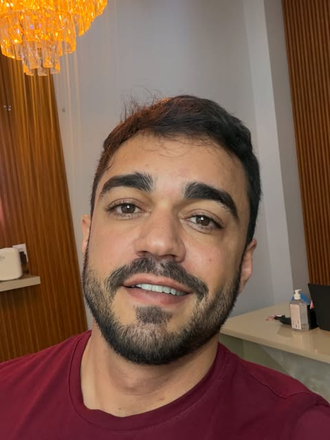
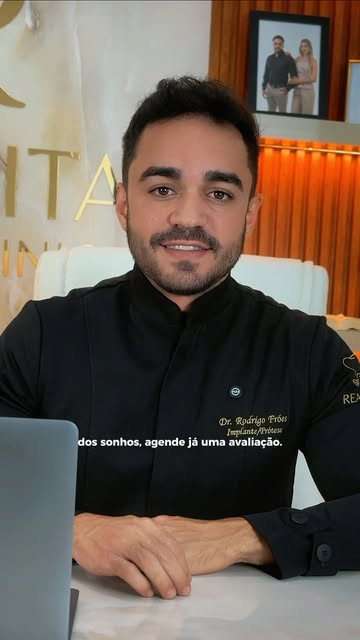
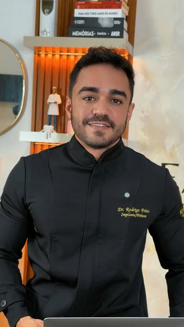

Na bio e nos destaques, coloque lentes em primeiro plano e explique como iniciar uma avaliação.
Começar por: bio + 3 fixados.Plano de posicionamento · Outubro de 2026
Dr. RodrigoFróes
Lentes de porcelana
Implantes como segunda frente
Plano para priorizar lentes de porcelana na comunicação em Parauapebas, manter implantes como segunda frente e conduzir o visitante até uma avaliação.
Como usar este playbook
Arrume o perfil hoje. Amanhã, publique.
Organize o perfil hoje, grave o primeiro lote amanhã e acompanhe quantas conversas chegam a uma avaliação.
A primeira sessão acontece amanhã: 60–90 minutos para gravar sete vídeos curtos e abastecer a semana.
Depois do primeiro mês, testar captação quinzenal somente se cada sessão render material aprovado para as seis publicações seguintes.Publique os nove conteúdos iniciais nos primeiros 12 dias. Comece amanhã, mesmo que o restante da grade ainda esteja em produção.
Regra: uma ideia e um CTA por peça.Revise visitas ao perfil, conversas no WhatsApp, avaliações marcadas e comparecimentos. Compare os temas que trouxeram contatos qualificados.
Revisão de desempenho: a cada 7 dias.
Dia 1 · amanhã, 17/10
Ajustar bio e CTA aprovados → gravar o primeiro lote → publicar o primeiro Reel no mesmo dia. Fixar as três peças principais até o Dia 3.
Objetivo do posicionamento
Quem visita o perfil deve entender que lentes são o foco, como Rodrigo avalia e como marcar uma consulta.
O material organizado inclui retratos profissionais e roteiros. Ainda falta inventariar os vídeos originais e confirmar se há casos clínicos elegíveis. Até lá, grave Rodrigo explicando critérios, etapas e dúvidas frequentes; não use imagens de pacientes sem validar autoria e autorização.
60%
Lentes de porcelana
Naturalidade, proporção, critérios de indicação, planejamento e limites.
25%
Implantes + reabilitação
Função, mastigação, alternativas, etapas e acompanhamento.
15%
Confiança no profissional
Quem é Rodrigo, como avalia e por que conversa antes de indicar.
Distribuição editorial proposta para o ciclo de 12 semanas: 29 pautas de lentes, 12 de implantes e 7 de confiança/conversão — aproximadamente 60/25/15. No primeiro mês, a meta é 25 publicações: 15 de lentes, 6 de implantes e 4 de confiança/conversão. A distribuição é uma hipótese e deve acompanhar demanda, agenda e capacidade clínica.
Hipóteses estratégicas para validar — ainda não são diferenciais comprovados
Público inicial (hipótese): pessoas de Parauapebas e região que consideram fazer lentes e têm dúvidas sobre indicação, desgaste ou resultado. Para implantes, falar com quem busca repor um dente ou planejar uma reabilitação. Confirmar essas hipóteses com conversas e avaliações dos últimos 90 dias; idade e gênero não foram presumidos.
Tese a testar: mostrar o que Rodrigo avalia antes de indicar lentes, quais alternativas considera e quando outro caminho pode ser mais adequado. Lentes ficam no centro do perfil; implantes ganham uma trilha própria.
No site público do Dr. Pablo Winckler, naturalidade, proporção e identidade aparecem junto de um processo em três etapas, casos e dúvidas frequentes. Vale explicar como Rodrigo conduz a avaliação, depois de confirmar que esse processo corresponde ao atendimento real. Esta leitura cobre apenas o site, com snapshot do Instagram datado de 30/09; não inclui anúncios ou resultados da clínica.Mensagem de trabalho — confirmar com Rodrigo “Antes de escolher uma mudança no sorriso, entenda o que faz sentido para o seu caso.”
Diagnóstico atual × direção proposta
O perfil já mostra as duas frentes. Falta deixar claro qual vem primeiro.
À esquerda, o snapshot recebido em 30/09. À direita, uma sugestão de bio, destaques e grade. Não é uma nova auditoria do Instagram.
Hoje Snapshot recebido · 30/09/2026
@dr_rodrigofroesCaptura enviada em 30/09/2026
41publicações
1.275seguidores
1.289seguindo
Nome observado
Dr. Rodrigo Fróes | Lentes em Porcelana e Implantes
Leitura da bioCRO-PA 7798 · Parauapebas · lentes e implantes · convite para avaliação
Temas observados no feedResultados clínicos · rotina · conteúdo pessoal · materiais da clínica
Leitura baseada na captura fornecida; não é uma nova coleta do perfil em 16/10.
- Na captura, a bio comunica lentes e implantes, mas não destaca lentes como prioridade.
- Os temas observados misturam resultados, rotina clínica, conteúdo pessoal e materiais da clínica.
- Rodrigo aparece no feed, mas faltam séries e fixados que organizem sua autoridade.
- Falta uma sequência clara que leve o visitante de interesse para confiança e, depois, para a consulta.
Direção Perfil organizado
—posts
≈1,3 milseguidores
—seguindo
Dr. Rodrigo Fróes | Lentes e Implantes
Cirurgião-dentista · CRO-PA 7798
Parauapebas
Foco em lentes de porcelana
Implantes · segunda frente
Agende sua avaliação ↓
SeguirMensagem+
ComeceLentesCritériosImplantesConsultaDúvidasSobre mim
01 · RODRIGOCOMECE
AQUI
AQUI

02 · LENTESANTES DAS LENTES:O QUE AVALIAR?

03 · IMPLANTESPOR ONDECOMEÇAR?
04 · LENTESHÁ OUTRO
CAMINHO?
CAMINHO?
05 · LENTESO QUE AVALIO
ANTES?
ANTES?
06 · LENTESO QUE ESTE CASO
ENSINA?*
ENSINA?*
07 · LENTESO QUE MUDA A
INDICAÇÃO?
INDICAÇÃO?
08 · IMPLANTESDÚVIDAS SOBRE
IMPLANTES
IMPLANTES

09 · CONVITEAVALIAÇÃO EMPARAUAPEBAS
- A sugestão deixa a cidade e a prioridade de lentes visíveis na bio.
- Fixados sugeridos: apresentação, lentes como foco principal e implantes como segunda frente.
- Destaques sugeridos: dúvidas, consulta e trajetória; casos só entram com material elegível.
- A grade proposta conduz de educação e processo ao agendamento; prova clínica é condicional.
Princípios de comunicação
Explique o que você avalia
antes de indicar um tratamento.
Critério antes do procedimento
Mostrar o que Rodrigo observa antes de indicar um tratamento: necessidade, função, estética, limites e alternativas.
Implantes têm uma pauta própria
Lentes abrem a conversa. Implantes entram em conteúdos específicos sobre avaliação, opções, etapas e acompanhamento.
O próprio Rodrigo explica
Gravar em primeira pessoa, no consultório, com palavras simples e exemplos do atendimento.
Mostrar que cor, forma, proporção, mordida, saúde dos dentes e expectativa entram no planejamento.
CTA: entenda as possibilidades na avaliação.Explicar que o plano começa na avaliação da boca, função e alternativas possíveis.
CTA: peça uma avaliação com o Dr. Rodrigo.Rodrigo explica alternativas, etapas, limites e próximos passos antes da decisão.
CTA: conheça o processo de avaliação.Direção visual
Mostre Rodrigo explicando
como conduz cada avaliação.
Use os retratos para apresentar Rodrigo e grave vídeos no consultório para explicar critérios, etapas e dúvidas. Até validar um caso próprio, o conteúdo se apoia nas explicações e no processo real.
Autoridade
Retrato profissional
Olhar direto, roupa formal e fundo limpo.
Usar em apresentação, avatar e conteúdos institucionais.Contexto clínico
Explicação no consultório
Meio corpo, ambiente real e leitura profissional.
Priorizar lentes, naturalidade, planejamento e critérios de indicação.Processo
Como mostrar a avaliação
As imagens atuais são retratos do profissional. Para mostrar a rotina, gravar Rodrigo apresentando as etapas no consultório vazio.
Não filmar pacientes, procedimentos em andamento ou itens clínicos identificáveis.Proximidade
Presença pessoal
Retrato próximo e natural para equilibrar autoridade com conexão.
Usar em conteúdos de bastidor, opinião e apresentação pessoal.Vídeos e casos clínicos
Explicação + contexto
Gravar Rodrigo explicando critérios e etapas em primeira pessoa. Casos clínicos só entram depois da confirmação de autoria, autorização e identificação profissional.
Materiais da clínica servem para localizar possíveis ativos; não autorizam republicação.01Comece aquiQuem é + áreas de atuação
02LentesIndicação + planejamento
03CritériosComo avalio cada caso
04ImplantesOpções + etapas
05ConsultaComo funciona
06DúvidasPerguntas reais
07Sobre mimTrajetória + valores
Como usar o acervo da clínica
Confirme a origem e a autorização antes de usar imagens da clínica.
O acervo serve para localizar possíveis conteúdos. Ele não confirma que Rodrigo executou o tratamento nem autoriza a publicação no perfil pessoal dele.
- Separar conteúdos da clínica dos materiais destinados ao perfil do Rodrigo.
- Confirmar com Rodrigo a autoria de cada caso antes de selecionar imagens.
- Para diagnóstico e resultado, exigir TCLE e identificação do profissional responsável.
Casos clínicos
Publique um caso só após confirmar
autoria e consentimento.
Explique o que foi avaliado, qual plano foi escolhido e o que aconteceu, sem prometer o mesmo resultado para outra pessoa.
Estrutura recomendada
Como apresentar um caso do Rodrigo
- Autoria
- Tratamento executado pelo Dr. Rodrigo Fróes.
- Contexto
- Queixa geral + objetivo, sem expor dados privados.
- Avaliação
- Alternativas consideradas e critérios revisados pelo profissional.
- Plano
- Conduta escolhida, etapas e cuidados descritos com fidelidade.
- Publicação
- TCLE, nome + CRO e publicação pelo profissional que executou o tratamento.
CASO PRÓPRIO APROVADO
AUTORIA + AUTORIZAÇÃO CONFIRMADAS
AUTORIA + AUTORIZAÇÃO CONFIRMADAS
Autoria confirmada→TCLE específico→Original preservado→Revisão clínica→Publicação com identificação
Regra: publicar imagens de diagnóstico e conclusão apenas de tratamentos executados pelo Rodrigo, com TCLE e identificação profissional. Sem caso validado, manter conteúdos de educação, processo e dúvidas.
Plano editorial inicial
As três primeiras peças apresentam
Rodrigo, lentes e implantes.
A grade inicial tem cinco conteúdos sobre lentes, dois sobre implantes e dois de apresentação ou agendamento. Fixe os três primeiros. O conteúdo de caso depende de validação clínica; ortodontia fica fora deste ciclo até a confirmação de escopo e prioridade.
* A peça de prova depende de autoria, autorização e identificação validadas. Sem caso próprio elegível, usar um conteúdo educativo no lugar.
Mostrar o que Rodrigo avalia para lentes e, depois, para implantes.
Gravar respostas curtas para perguntas que as pessoas realmente fazem.
Apresentar conversa, avaliação, alternativas e próximos passos.
Responder às dúvidas locais com a voz do próprio Rodrigo.
7 aberturas para os primeiros vídeos
- Apresentação: “Eu sou o Dr. Rodrigo Fróes e atendo em Parauapebas. Aqui, explico como avalio cada caso antes de indicar um tratamento.”
- Lentes: “Lente de porcelana não começa pela cor. Antes, eu observo forma, proporção e função.”
- Implantes: “Para conversar sobre implantes, primeiro preciso avaliar a região e entender as opções para aquele caso.”
- Alternativas: “Será que todo incômodo com o sorriso se resolve com lentes? A resposta depende da avaliação e das alternativas.”
- Critérios: “Antes de indicar lentes, eu observo mais do que a cor e o formato dos dentes.”
- Caso clínico: “Neste caso, vou explicar o que foi avaliado, por que esse plano foi escolhido e quais eram os limites.”
- Indicação: “O mesmo tratamento não serve para todos os sorrisos. A indicação depende do que a avaliação mostra.”
A pauta de prova é condicional. Sem caso elegível, publicar a alternativa educativa prevista no calendário. Cada peça clínica exige revisão do responsável técnico.
Calendário editorial · 12 semanas
25 publicações até o Dia 30.
Depois, três por semana.
Comece amanhã com o material disponível e produza o restante em paralelo. Rodrigo revisa cada explicação técnica antes da gravação.
7publicações nos Dias 1–7
17publicações nos Dias 8–28
25meta até o Dia 30; a 25ª pauta entra no Dia 29
3/semanacadência proposta a partir da Semana 6
Mix das 48 pautas: 29 lentes, 12 implantes e 7 confiança/conversão (aprox. 60/25/15). As primeiras 24 peças saem até o Dia 28; a 25ª entra no Dia 29. Restam duas peças na semana de transição após o Dia 30; a cadência completa de três por semana começa na Semana 6. Se gravação, edição ou aprovação não sustentarem o volume, reduzir peças antes de reduzir a revisão clínica.
Apresentar Rodrigo e priorizar lentes
- Confiança
Quem é Rodrigo e como começa o atendimento? Confirmar dados e processo.
- Lentes
Lente de porcelana não começa pela cor.
- Implantes
Por onde começa a avaliação para implantes?
- Lentes
Todo incômodo com o sorriso pede lentes?
- Lentes
O que Rodrigo avalia antes de conversar sobre lentes?
- Lentes
Se houver caso próprio elegível: explicar contexto, critérios e limites. Sem validação, fazer um conteúdo educativo.
- Lentes
Que fatores podem mudar a indicação?
Responder dúvidas e explicar a consulta
- Implantes
Quais dúvidas levar para uma avaliação de implantes?
- Confiança
O que acontece na primeira avaliação? Confirmar duração, etapas e custo.
- Lentes
O que uma foto de referência não consegue confirmar?
- Lentes
Por que cor e formato precisam ser avaliados em conjunto?
- Implantes
Perda de um dente: o que precisa ser avaliado antes da reabilitação?
- Lentes
Como a expectativa de cada pessoa entra no planejamento?
Explicar critérios
- Lentes
Lente, faceta e clareamento: que perguntas ajudam a comparar caminhos?
- Lentes
Como alinhar expectativa e limites antes de decidir?
- Lentes
O que a vista frontal do sorriso não mostra?
- Lentes
Como conversar sobre cor e textura sem buscar um padrão único?
- Implantes
Implante e prótese têm papéis diferentes no plano? Explicar com validação clínica.
- Confiança
Responder às três dúvidas reais mais recebidas pela equipe.
Mostrar o processo
- Lentes
Quando faz sentido comparar alternativas antes de escolher lentes?
- Lentes
Como o objetivo do paciente entra na conversa sobre preservação dentária?
- Implantes
Quais etapas podem compor uma reabilitação? O plano varia por caso.
- Implantes
O que o acompanhamento após o tratamento precisa esclarecer?
- Confiança
Como iniciar o contato e pedir uma avaliação? Confirmar o fluxo real.
Fechar o primeiro ciclo
- Lentes · Dia 29
O que explicar antes de pedir uma avaliação para lentes?
- Lentes
Quais perguntas ajudam a alinhar expectativas sobre o sorriso?
- Implantes
O que avaliação e exames podem esclarecer antes do plano?
Testar clareza
- Lentes
Naturalidade não segue um único padrão: como explicar isso?
- Lentes
O que muda quando a pessoa traz uma foto de referência?
- Implantes
Que fatores podem alterar as etapas e o prazo de um plano?
Reforçar indicação
- Lentes
Quando não indicar lentes também faz parte da avaliação.
- Lentes
Como comparar caminhos sem decidir só pela imagem final?
- Implantes
Quais alternativas podem ser avaliadas quando falta um dente?
Explicar além da estética
- Lentes
O que é avaliado além dos dentes da frente?
- Lentes
Como conversar sobre limites antes de qualquer decisão?
- Implantes
Que dúvidas levar sobre acompanhamento e manutenção?
Usar prova com responsabilidade
- Lentes
Se houver caso próprio elegível: explicar indicação, contexto e limites. Sem autorização, publicar conteúdo educativo.
- Lentes
O que não é possível concluir olhando apenas uma foto?
- Implantes
Responder dúvidas reais sobre conforto e recuperação, sem generalizar resultados.
Ajudar a escolher os próximos passos
- Lentes
Quais expectativas precisam ser conversadas antes do planejamento?
- Lentes
Três perguntas para fazer antes de decidir sobre lentes.
- Implantes
O que muda entre repor um dente e planejar uma reabilitação mais ampla?
Responder às dúvidas mais frequentes
- Lentes
Por que a cor ideal depende do caso e da expectativa?
- Lentes
Como usar referências visuais sem copiar outro sorriso?
- Confiança
Apresentar as etapas e os próximos passos da avaliação, após validação.
Fechar e planejar o próximo ciclo
- Lentes
Revisar as dúvidas sobre lentes que mais apareceram no período.
- Confiança
Responder uma pergunta recorrente recebida nas últimas semanas.
- Confiança
Reforçar como marcar uma avaliação e o que esperar do contato.
Guia de gravação
Pergunta, explicação e próximo passo.
Esse é o roteiro de cada Reel.
Escolha uma dúvida real, desenvolva uma ideia e termine com um convite simples. Rodrigo pode usar os tópicos como guia e falar do próprio jeito.
Explicar sem pressa, como faria durante a consulta. Evitar promessas absolutas.
Trocar termos técnicos por exemplos que qualquer paciente entende. Uma ideia por vídeo. Frases curtas. Sem “odontologuês”.
Falar para uma pessoa, não para uma audiência. Ombros relaxados, mãos naturais e pequenas pausas entre as frases.
Usar tópicos como guia. Se errar, retomar só a frase. O vídeo deve soar como uma conversa, não como leitura.
Setup padrão
Como posicionar o celular antes de cada gravação.
- Formato
- Vertical 9:16. Gravar em 4K/30 fps quando o celular permitir; 1080p/30 fps já é suficiente.
- Lente
- Usar 1×. Evitar grande angular. Limpar a lente antes de começar.
- Enquadramento
- Plano médio, do peito para cima. Câmera na altura dos olhos. Deixar um pequeno respiro acima da cabeça.
- Distância
- Aproximadamente 1 a 1,5 metro do celular, mantendo o rosto como ponto principal do quadro.
- Luz
- Rosto voltado para janela ou luz suave a 45°. Evitar ficar de costas para janela e evitar somente luz de teto.
- Áudio
- Ambiente silencioso + microfone de lapela sempre que disponível. Fazer um teste de 10 segundos antes da sequência.
- Cenário
- Consultório real, limpo e com poucos elementos. Nada disputando atenção com o rosto do Rodrigo.
OLHOS NA LENTE
PEITO PARA CIMA
Referência: rosto central, olhos próximos ao terço superior e fundo clínico discreto.
Estrutura de roteiro
Um Reel de 35–50 segundos em quatro blocos.
Se o assunto pedir menos tempo, comprimir o bloco de explicação. O começo e o fechamento continuam iguais.
- 0–3sGancho
Abrir com uma dúvida, erro comum ou afirmação direta. Nada de “Oi, pessoal”.
- 3–10sContexto
Explicar por que aquela dúvida importa para quem pensa em fazer lentes.
- 10–38sExplicação
Entregar 1 raciocínio clínico em linguagem simples, com no máximo 3 pontos.
- 38–50sFechamento + CTA
Concluir a ideia e indicar um único próximo passo: ver destaque, mandar dúvida ou agendar avaliação.
Exemplo completo
Vídeo 01 — “Lente não começa pela cor”
Use os blocos como guia. Rodrigo fala com as próprias palavras.
- 0–3s“Lente de porcelana não começa pela cor.”
- 3–10s“Antes de pensar em branco, eu avalio o formato do sorriso, a proporção dos dentes e o que combina com o rosto.”
- 10–38s“Também observo função, saúde dos dentes e expectativa. É isso que define se lentes fazem sentido e qual caminho pode ficar mais natural para aquele caso.”
- 38–50s“Se você pensa em lentes, o primeiro passo é entender o seu caso em uma avaliação. A partir daí, a decisão fica muito mais clara.”
Base principal. Ótimo para dúvidas, critérios, naturalidade e opinião profissional.
Plano médio · 25–50s · consultórioA pergunta aparece primeiro e Rodrigo responde como responderia durante uma consulta.
Close ou plano médio · 20–40sUsar somente se houver caso próprio elegível; explicar contexto e critérios antes do resultado. Sem caso validado, substituir por conteúdo educativo.
Voz do Rodrigo + apoio gráficoUsar o consultório vazio e imagens do próprio Rodrigo enquanto ele explica um conceito. Não mostrar pacientes, procedimentos em andamento, instrumentais ou materiais identificáveis.
5–8 cenas do ambiente · narração limpaLista curta para explicar critérios sem transformar o conteúdo em aula longa.
3 pontos · 30–45sMesma linguagem e método, com menor frequência para preservar o foco principal em lentes.
Dúvidas + processo + função
Falar assim
“Quando penso em lentes, eu não começo escolhendo a cor. Primeiro avalio forma, proporção, função e o que combina com o rosto daquela pessoa.”
Primeira pessoa, raciocínio claro e linguagem humana.
Evitar
“O caro mesmo é continuar incomodado.”
Não pressionar pelo medo, pelo preço ou por uma promessa de resultado. Explicar critérios, alternativas e limites. Roteiros de setembro sobre preço e durabilidade precisam de revisão antes de serem reutilizados.
Rotina de captação
Amanhã começa a captação. Depois, 1 sessão semanal de 60–90 minutos no primeiro mês.
Gravar sete vídeos curtos na primeira sessão. Publicar sete peças na primeira semana, seis nas semanas 2 e 3 e cinco na semana 4. Após o primeiro mês, testar captação quinzenal apenas se houver seis peças aprovadas por sessão.
- 10 minPreparar
Luz, áudio, enquadramento, água, roteiro em tópicos e teste rápido.
- 35 minGravar lentes
5 vídeos: cor e proporção, alternativas, critérios, caso educativo ou validado e fatores de indicação.
- 15 minGravar apresentação + implantes
1 vídeo de apresentação e 1 resposta sobre o início da avaliação para implantes.
- 15 minCaptar apoio
Consultório vazio, planos do ambiente, falas curtas e fotos verticais do próprio Rodrigo.
- 10 minRefazer ganchos
Gravar 2 ou 3 versões dos melhores começos para facilitar a edição e os testes.
Checklist antes de enviar para edição
✓ Uma ideia principal
✓ Gancho nos primeiros 3 segundos
✓ Olho na lente e áudio limpo
✓ Sem promessa de resultado
✓ CTA único no final
✓ Caso clínico somente com autorização
✓ Sem paciente ou procedimento em andamento
Da atenção à consulta
Leve o público local
da dúvida à avaliação.
Acompanhe visitas ao perfil, conversas qualificadas, avaliações marcadas e comparecimentos. Relacione cada contato ao tema que iniciou a conversa.
01Conteúdo educativoTema + retenção
→
02Perfil + destaquesVisitas, salvamentos, perguntas
→
03Contato no WhatsAppOrigem registrada
→
04Avaliação com RodrigoAgendamento + comparecimento
→
05Plano propostoAceite quando registrado
Pessoas da região alcançadas e visitas ao perfil.
Contatos únicos com interesse real, acompanhando separadamente lentes e implantes.
Agendamento, comparecimento e custo por consulta.
Quando houver registro real no CRM.
Manter uma rota principal para agendamento no perfil. Cada conteúdo pode convidar a uma dúvida ou a um destaque, mas o contato precisa registrar procedimento de interesse e origem. Definir quem responde no WhatsApp, o prazo de resposta e o que a avaliação inclui antes de publicar esses detalhes.
Sprint de lançamento e escala
Começamos amanhã.
30 dias para medir a procura local.
Meta de desempenho para o Dia 30: um Reel com 3× a mediana de pelo menos cinco Reels orgânicos comparáveis dos 90 dias anteriores. É uma meta de teste, sem promessa de viralização, pacientes ou faturamento. Se houver menos peças comparáveis, usar os Dias 1–7 como linha de base provisória e revisar a meta no Dia 30. Acompanhar também alcance na região, visitas ao perfil, conversas qualificadas e avaliações realizadas.
- 01Dia 1 · amanhã, 17/10 · Entrar no ar
Depois de definir escopo, CTA e responsável pelo atendimento: atualizar a bio, publicar um Reel educativo de edição simples e gravar o restante do lote em paralelo.
- 02Dias 2–7 · Ritmo diário
Publicar um Reel por dia, completar os três fixados até o Dia 3 e usar Stories leves em quatro ou cinco dias da semana. Responder contatos e registrar a linha de base.
- 03Dias 8–14 · Rever os primeiros resultados
Publicar seis peças na semana. No Dia 7, escolher os melhores ganchos por retenção, compartilhamentos, alcance local e visitas ao perfil; completar os nove conteúdos iniciais até o Dia 12.
- 04Dias 15–28 · Manter um ritmo possível
Publicar seis peças na terceira semana e cinco na quarta. Se um Reel superar a mediana comparável, testar até três aberturas para o mesmo tema na captação seguinte, trocando pautas menos prioritárias sem aumentar o volume. Rever a qualidade dos contatos antes de repetir o tema.
- 05Dias 29–30 · Fechar o primeiro ciclo
Publicar a 25ª peça no Dia 29. No Dia 30, revisar alcance, conversas, avaliações e comparecimentos; confirmar a capacidade de produção antes de manter ou alterar a cadência.
- 06Dias 31–60 · Ajustar pauta e atendimento
Publicar as duas peças restantes da Semana 5 e, a partir da Semana 6, usar três publicações semanais como base. Reforçar temas que geram conversas qualificadas, corrigir pontos de abandono e comparar contatos, avaliações e comparecimentos com a linha de base.
- 07Dias 61–84 · Decidir se vale aumentar o ritmo
Manter três publicações semanais e concentrar a produção nos formatos que trouxeram alcance local e conversas qualificadas. Aumentar a cadência apenas se os dados e a equipe comportarem.
Entregáveis do primeiro ciclo
Primeiro Reel no Dia 1 · 3 fixados até o Dia 3 · 9 conteúdos iniciais até o Dia 12 · até 25 publicações no Dia 30 · 48 pautas em 12 semanas · revisão semanal
Fechamentos para iniciar a execução
Validar estes pontos na reunião e registrar os dados que ainda não foram fornecidos.
Confirmar lentes como prioridade, implantes como segunda frente e se ortodontia fica fora deste calendário.
Confirmar procedimentos, formação, registro e títulos que podem ser comunicados.
Separar orgânico e mídia paga: alcance, conversas, avaliações, comparecimentos e planos dos últimos 90 dias.
Separar arquivos originais, autoria, consentimento e responsável pela aprovação de cada caso.
Inventariar vídeos e fotos originais; os retratos desta apresentação não substituem prova clínica.
Definir link e mensagem inicial; registrar origem, procedimento de interesse, agendamento, comparecimento e plano aceito em uma planilha ou CRM.
Confirmar etapas, duração, condição comercial e o que a avaliação inclui antes de publicar esses detalhes.
Definir quem responde o WhatsApp, prazo de resposta e prazo para revisão clínica/editorial.
Confirmar quem grava, edita e publica sete peças na primeira semana e cinco a seis nas semanas seguintes.
Critérios para publicidade
Quatro validações antes de publicar um caso clínico.
Casos do perfil devem ser de tratamentos executados pelo próprio Rodrigo.
TCLE específico antes de usar imagem, vídeo ou identificação do paciente.
Nome completo e CRO na peça clínica, conforme revisão responsável.
Resultado é individual. Evitar garantia, superioridade absoluta e diagnóstico por DM.
A Resolução CFO 196/2019 prevê TCLE e identificação profissional para imagens de diagnóstico e conclusão, permite a divulgação pelo cirurgião-dentista que executou o tratamento e veda imagens do procedimento em andamento. O CFO também veda a publicação de casos de terceiros e por clínicas ou consultórios como pessoas jurídicas. Este checklist é preventivo; o cirurgião-dentista responsável deve validar cada peça e consultar o CRO-PA em caso de dúvida.
Fontes oficiais: Resolução CFO-196/2019 · orientação do CFO sobre redes sociais (2025).
Objetivo de percepção a validar
Quando alguém em Parauapebas considerar lentes, queremos que associe Rodrigo a explicações claras sobre avaliação, opções e limites de cada caso.